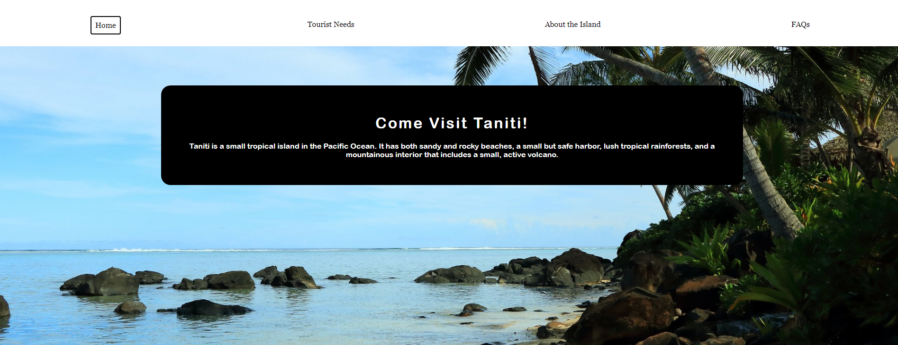
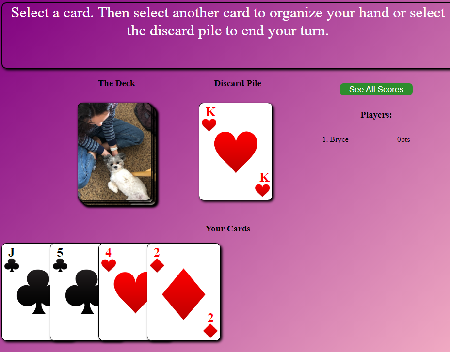
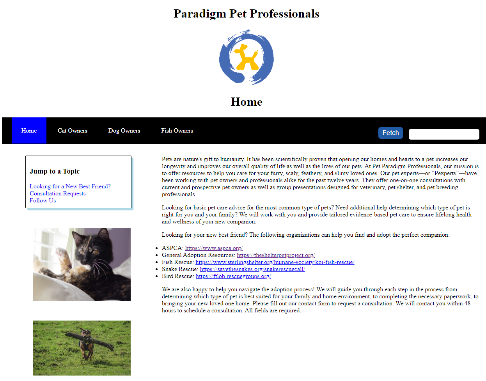

Projects
Taniti Tourism Website
UX Design, HTML, CSS, Parrallax | Created March 2024The Taniti Tourism website is a project for the UX Design class at WGU. The goal was to create a website for the fictional Tanitain government to help with their plan to increase the number of tourists who visit the island and its attractions. This project involved creating a timeline, persona, wireframe, sitemap/site flow and prototype for the scenario. The final site product showcases my UX/UI design skills. It utilizes user conscious navigation, including breadcrumbs which appear at the third level in the site hierarchy, a primary fixed navigation bar, and additional links to each site in the site map in the footer. The site is responsive; veiwable on moblie and desktop.
3 to 14 Card Game
HTML, CSS, JavaScript | Created November 2023The 3 to 14 Card Game is my attempt to recreate a family card game.
Paradigm Pet Professionals
UI Design, HTML, CSS, Form Validation | Created January 2024The Paradigm Pet Professionals website is a project for the UI Design class at WGU.
